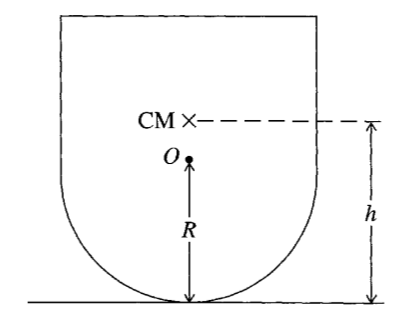
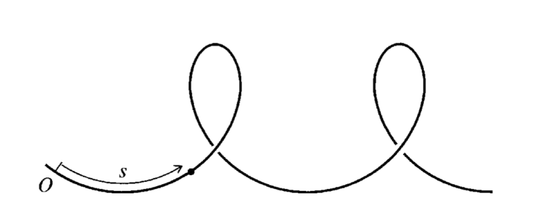
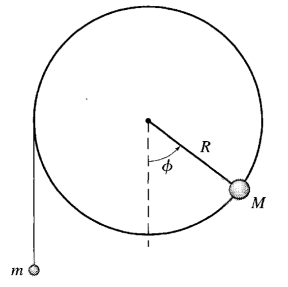

Homework 5 (Due 14 Mar)#
Due 14 Mar (midnight)
Total points: 100
import numpy as np
from math import *
import matplotlib.pyplot as plt
import pandas as pd
%matplotlib inline
plt.style.use('seaborn-v0_8-colorblind')
---------------------------------------------------------------------------
ModuleNotFoundError Traceback (most recent call last)
Cell In[1], line 1
----> 1 import numpy as np
2 from math import *
3 import matplotlib.pyplot as plt
ModuleNotFoundError: No module named 'numpy'
Exercise 1 (10 pt), SHO and Conservation of Energy#
Consider the standard harmonic oscillator with a mass \(m\) attached to a horizontal spring with spring constant \(k\). It is constrained to move in the \(x\) direction only and there is no friction present. With the equilibrium position as \(x=0\), then the potential energy is \(U(x)=\frac{1}{2}kx^2\).
We give the oscillator a little kick at \(t=0\) and let it go. It reaches a maximum distance of \(A\) from the equilibrium position.
1a (2pt) Write down the conservation of energy equation and find the velocity as a function of position (i.e., find \(\dot{x}(x)\)).
1b (4pt) Construct the integral for the time it takes for the oscillator from \(x=0\) to any position \(x\).
1c (4pt) Use the integral to find \(x(t)\) and show that the period of the oscillator is \(T=2\pi\sqrt{m/k}\).
Exercise 2 (10pt), Kid’s toy and stable equilibrium#
A toy is made from a cylinder mounted on a hemisphere as shown in the figure below. The hemisphere has a radius of \(R\) and the center of mass of the whole toy is \(h\) above the ground.

2a (2pt) Find the height of the center of mass of the toy as a function of the angle \(\theta\), measured from the vertical.
2b (3pt) Use this to find the gravitational potential energy \(U(\theta)\). Show in a figure how the potential energy varies with \(\theta\). Note that \(h/R\) becomes an important parameter. For different choices of \(h/R\) do the equilibrium points change? How?
2c (5pt) For which values of \(R\) and \(h\) is the toy in stable equilibrium so that it does not fall over? Does it fit with your graphical analysis? Why does this make sense to you? Or how would you explain it to a friend?
Exercise 3 (15pt), “Generic” 1D motion#
We will eventually learn how to solve for equations of motion for generalized coordinates. That work requires us to think about the forces and constraints on a system. Here we will consider a particle moving along a curved path to begin to think about how to describe the motion of a particle in a more general way.

A bead follows the curved path above, you can imagine it is a wire or a track, and the bead is constrained to move along the path. The bead’s position is described by its distance along the path, \(s\) as measured from the origin \(O\). The \(\hat{s}\) direction is always along the path - that is, it’s always tangent to the wire.
3a (3pt) Let’s start by writing the velocity \(\mathbf{v}\) in terms of its Cartesian components (e.g., \(dx/dt\)) and find it’s magnitude (\(v\)). How does this approach seem given the shape of the wire? Do you think we have chosen a good set of coordinates?
3b (4pt) Instead, consider the coordinate system \(\langle \hat{s}, \hat{s}_{\perp}\rangle\). That is the the direction along the path and the direction perpendicular to it (assume we are solving this in a plane for the moment). Use this coordinate system to show that bead’s speed is given by \(v=\dot{s}\), that is there is no dependence of the speed on the \(\hat{s}_{\perp}\) component of \(\vec{v}\). How might this be a better choice?
3c (4pt) Still using this coordinate system, prove that the tangential component of the net force (\(F_{||}\), “parallel” to the motion) on the bead is \(m\ddot{s}\).
There is a force due to the wire (\(\mathbf{F}_w\)) that ensures the bead stays on the path. It is not in the direction of the path (i.e., friction), only perpendicular to the wire. Assume all other forces are conservative (i.e., can be derived from a generic potential \(-\nabla U\)).
3d (4pt) Show that the tangential component of the net force due to the wire is \(-\frac{dU}{ds}\).
This 1D concept extends to multiple dimensions and can help us understand the Lagrangian method of solving for the equations of motion.
Projection of a gradient
We can calculate the projection for a generic potential in a particular Cartesian direction.
Ultimately, the projection is the what the potential changes with respect to the projection direction.
Exercise 4 (15pt), Another 1-D conservative system; baby bifurcations#
The apparatus below is a massless wheel of radius \(R\) that is mounted to a frictionless axle. A small, dense piece of clay with mass \(M\) is glued to edge of the wheel as shown. Another mass \(m\) hangs from a massless string that is wrapped around the wheel. We can assume the string is inextensible and does not slip, and the system is in a uniform gravitational field.

We can show that this complicated system is still one-dimensional (at least in space) and then we can see the effects of parameters like \(m/M\).
4a (3pt) In terms of the rotation angle \(\phi\) of the wheel, write down the total potential energy \(U(\phi)\) of the system of both masses. Take note of any constraints that you use to write this as a 1D problem. When working this kind of problem, every object-Earth pair has gravitational potential energy and we must have the same zero of potential energy for every pair.
4b (2pt) Use this potential energy to find values of \(m\) and \(M\) for which there are “fixed points”, “critical points”, or what we sometimes call “equilibrium points”. The language we use comes from different fields, but the concept is the same. What is the condition for the existence of any critical points?
4c (3pt) Describe the fixed points, determine their stability, and explain why they make sense in terms of the expected motion.
4d (5pt) Plot the potential energy for two different values of \(m/M\) and explain the differences in the potential energy graphs. Consider cases when you observe very different motion. Think about an initial condition where the mass \(m\) is at rest and the wheel is at rest. What happens when you release the mass \(m\) for your two cases?
4e (2pt) Determine the value of \(m/M\) for which the system begins to exhibit oscillations (if released from \(\phi=0\)).
The value of \(m/M\) is a dimensionless quantity that characterizes the system. In a dynamical system, we think of it as a parameter that can change the qualitative behavior of the system. Such parameters can lead us to bifurcations, phase transitions, and other interesting (often non-equilibrium) phenomena.
Exercise 5 (20 pt), Phase Diagrams#
One of the most useful tools we can learn from classical mechanics is the phase diagram. For us, it is the plot of the position and velocity of a particle in a 1D system, but the concept can be extended to higher dimensions and to other systems. The phase diagram can tell us about the stability of fixed points, the period of oscillations, and the qualitative behavior of the system.
In this exercise, we will consider a particle in a potential \(U(x)\) and we will plot the phase diagrams using both quiver and streamplot in matplotlib. The purpose of this exercise is to learn how to plot phase diagrams and to interpret the results.
We start with a little code for plotting the phase diagram of the simple harmonic oscillator. The code is written in a way that you can easily modify it to plot the phase diagram of other systems. The key point is to make sure that the quiver or streamplot function is called with the correct arguments.
import numpy as np
from math import *
import matplotlib.pyplot as plt
import pandas as pd
%matplotlib inline
plt.style.use('seaborn-v0_8-colorblind')
def SHO(X,V):
# For a simple harmonic oscillator, x' = v, and v' = -x.
dX = V
dV = -X
return dX, dV
def generate_phase_space(x_lim, v_lim, grid_size):
x = np.linspace(x_lim[0], x_lim[1], grid_size)
v = np.linspace(v_lim[0], v_lim[1], grid_size)
X, V = np.meshgrid(x, v)
dX, dV = SHO(X, V)
return X, V, dX, dV
# Generate phase space
x_lim = (-5, 5)
v_lim = (-5, 5)
grid_size = 20
X, V, dX, dV = generate_phase_space(x_lim, v_lim, grid_size)
fig, axs = plt.subplots(2, 1, figsize=(8, 10)) # Two rows, one column
# Quiver plot on the first subplot
axs[0].quiver(X, V, dX, dV, color='C0')
axs[0].set_title('Quiver Plot of SHO Phase Diagram')
axs[0].set_xlabel(r'$x$')
axs[0].set_ylabel(r'$\dot{x}$')
# Stream plot on the second subplot
axs[1].streamplot(X, V, dX, dV, color='C1')
axs[1].set_title('Stream Plot of SHO Phase Diagram')
axs[1].set_xlabel(r'$x$')
axs[1].set_ylabel(r'$\dot{x}$');
5a (2pt) Explain how the code works to produce the phase diagram. The key part is explaining what the function
SHOdoes and how that relates to thequiverandstreamplotcalls. What doesnp.meshgriddo and why is it used?
We have discussed the physical pendulum in class where the potential energy is given by:
5b (4pt) Modify the code to produce the phase diagram for the physical pendulum. You can choose mass and length. Make sure to explore the diagram outside of the small angle approximation. What new features do you observe in the phase diagram? What motion are they associated with?
Now we have a code that we can use to plot the phase diagram of any 1D system. We will use it to explore the damped harmonic oscillator and the damped physical pendulum. Here we write the equations of motion as the system is still 1-D, but the forces are not derived from a potential.
The damped harmonic oscillator has the equation of motion: $\(\ddot{x}=-\frac{k}{m}x-\frac{b}{m}\dot{x}\)$
5c (5pt) Modify the code to produce the phase diagram for the damped harmonic oscillator. You can choose \(k/m\) and \(b/m\), but might want to explore the values. What features do you observe in the phase diagram? What motion are they associated with?
The damped physical pendulum has the equation of motion: $\(\ddot{\theta}=-\frac{g}{l}\sin\theta-\frac{b}{ml}\dot{\theta}\)$
5d (5pt) Modify the code again to produce the phase diagram for the damped physical pendulum. You can choose \(b/ml\), but might want to explore the values. How does this motion compare to the motion of the damped harmonic oscillator?
5e (4pt) Return to the simple harmonic oscillator. Show using conservation of energy the phase diagram is a series of ellipses in \((x,v)\) space. Plot these ellipses on top of a phase diagram for the simple harmonic oscillator to illustrate how the phase diagram explains the total energy of the system.
Exercise 6 (30pt), Numerical integration techniques and oscillations#
We’ve discussed the Euler method and made use of it in the prior homeworks. However, the Euler method is not the most accurate method for solving ODEs. It has a real issue with energy conservation, which is a problem for conservative systems. Here we will explore the Euler-Cromer method and the Runge-Kutta methods for the simple harmonic oscillator. You will then apply these same methods to the various oscillators in Exercise 5.
Below we have written a code to solve the ODE:
where the initial position is 1 and the initial velocity is 0. The time step is set by the number of integration steps, \(N\). We wrote a function called euler that will then solve the ODE using the Euler method. There’s a second function called euler_cromer that uses the Euler-Cromer method.
omega = 1 # Angular frequency
x0 = 1 # Initial position
v0 = 0 # Initial velocity
t0 = 0 # Start time
tf = 100 # End time
N = 10000 # Number of time steps
dt = (tf-t0)/N # Time step
def euler(omega, x0, v0, t0, tf, dt):
t = np.arange(t0, tf, dt)
x = np.zeros(t.shape)
v = np.zeros(t.shape)
x[0], v[0] = x0, v0
for i in range(1, len(t)):
x[i] = x[i-1] + dt * v[i-1]
v[i] = v[i-1] - dt * omega**2 * x[i-1]
return t, x, v
def euler_cromer(omega, x0, v0, t0, tf, dt):
t = np.arange(t0, tf, dt)
x = np.zeros(t.shape)
v = np.zeros(t.shape)
x[0], v[0] = x0, v0
for i in range(1, len(t)):
v[i] = v[i-1] - dt * omega**2 * x[i-1]
x[i] = x[i-1] + dt * v[i]
return t, x, v
We now call the euler and euler_cromer functions and plot the position and velocity as a function of time. We do this by storing the position and velocity as pandas dataframes. This kind of data structure is useful for storing time series data and is easy to plot. It’s a good idea to get in the habit of working with data structures like this.
In the resulting plots you can see how the Euler-Cromer method is more accurate than the Euler method. The Euler method has a systematic error that causes the amplitude of the oscillation to grow. The Euler-Cromer method does not have this problem.
t, x, v = euler(omega, x0, v0, t0, tf, dt)
eulerdf = pd.DataFrame({'t': t, 'x': x, 'v': v})
t, x, v = euler_cromer(omega, x0, v0, t0, tf, dt)
euler_cromerdf = pd.DataFrame({'t': t, 'x': x, 'v': v})
eulerdf.head()
| t | x | v | |
|---|---|---|---|
| 0 | 0.00 | 1.0000 | 0.000000 |
| 1 | 0.01 | 1.0000 | -0.010000 |
| 2 | 0.02 | 0.9999 | -0.020000 |
| 3 | 0.03 | 0.9997 | -0.029999 |
| 4 | 0.04 | 0.9994 | -0.039996 |
# plot all positions vs time on the same graph
plt.figure(figsize=(8, 6))
plt.plot(eulerdf['t'], eulerdf['x'], label='Euler')
plt.plot(euler_cromerdf['t'], euler_cromerdf['x'], label='Euler-Cromer')
plt.title('Position vs Time')
plt.xlabel('Time (s)')
plt.ylabel('Position (m)')
plt.legend();
6a (2pt) Graph the energy of the system as a function of time for both the Simple Euler and Euler-Cromer methods. You should use the same initial conditions and time step for both methods. What do you observe?
6b (4pt) Write the exact solution for these initial conditions and compare the numerical solutions to the exact solution using a point-by-point measure. What do you observe? Come up with a measure of the overall error (or find one) in the numerical solution and discuss the results.
6c (4pt) Write the code to solve the simple harmonic oscillator with second-order Runge Kutta (this needs to be from scratch, not using a library). You can use the lecture notes as a starting point.
6d (2pt) Compare the results of this RK2 method to the previous methods. Use whatever comparison method you can develop or explain. Careful here because the time steps might not be the same for the different methods.
6e (3pt) Look up
solve_ivpin thescipylibrary and use it to solve the simple harmonic oscillator. Compare the results to the previous methods. What integrator are you using withsolve_ivp?
6f (15pt) Using your the integrator of your choosing, find numerical solutions for a given choice of initial conditions for each of the examples in exercise 5. Plot the phase diagram and the numerically computed trajectory on the phase diagram. See the example below for the simple harmonic oscillator.
Extra Credit - Integrating Classwork With Research#
This opportunity will allow you to earn up to 5 extra credit points on a Homework per week. These points can push you above 100% or help make up for missed exercises. In order to earn all points you must:
Attend an MSU research talk (recommended research oriented Clubs is provided below)
Summarize the talk using at least 150 words
Turn in the summary along with your Homework.
Approved talks: Talks given by researchers through the following clubs:
Research and Idea Sharing Enterprise (RAISE): Meets Wednesday Nights Society for Physics Students (SPS): Meets Monday Nights
Astronomy Club: Meets Monday Nights
Facility For Rare Isotope Beam (FRIB) Seminars: Occur multiple times a week